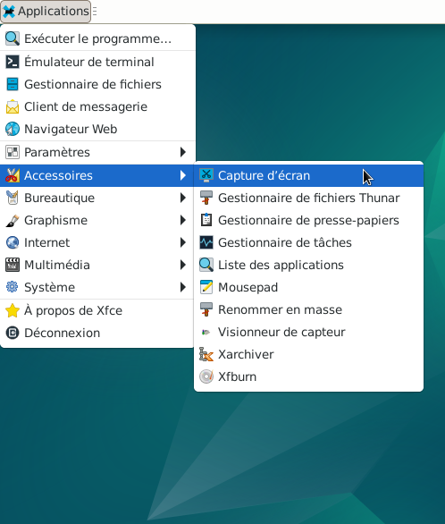
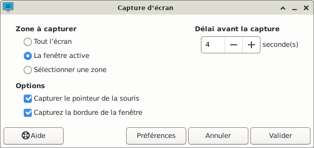
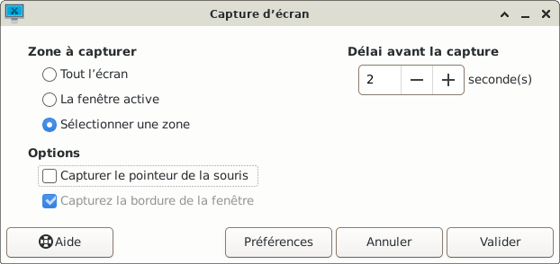
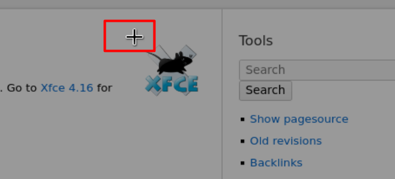
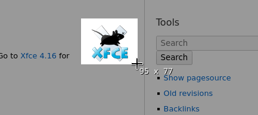
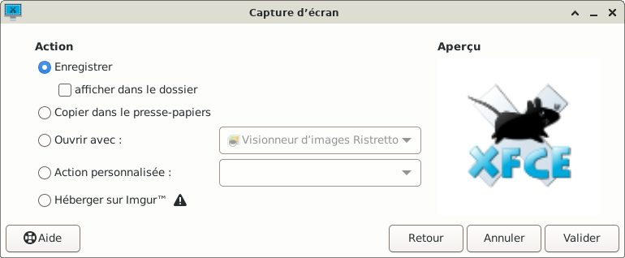
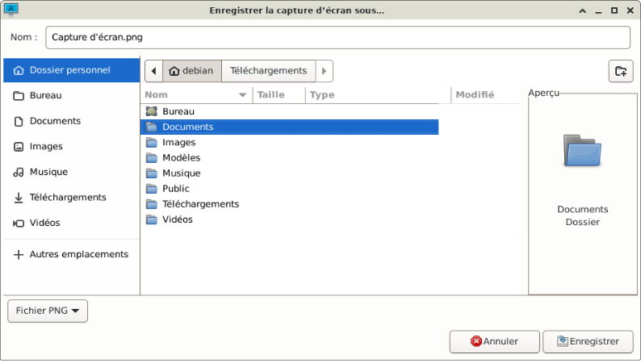
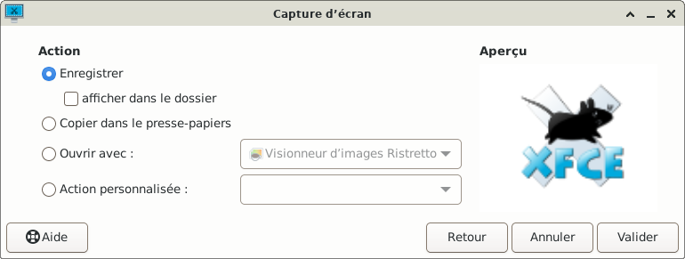

&
Capture d'écran : Xfce4-screenshooter et le site Xfce.
Xfce4-screenshooter est une application qui peut être utilisée pour prendre des instantanés de l'écran de votre bureau. Cette application vous permet de capturer l'intégralité de l'écran, la fenêtre active ou une région sélectionnée. Vous pouvez définir le délai qui s'écoule avant que la capture d'écran ne soit prise et l'action qui sera effectuée avec la capture d'écran.


- Tout l'écran: Prend une capture de tout l'écran
- La fenêtre active : Prend une capture seulement de la fenêtre active
- Sélectionner une zone : Apès avoir cliqué sur « Valider » un curseur apparaît. Puis maintenir appuyé le bouton de la souris, sélectionner une zone de la capture souhaitée ensuite relâcher le bouton de la souris. Il est possible aussi en bougeant le curseur et en appuyant simultanément sur la touche Ctrl du clavier de déplacer la zone à capturer.
- Capturer le pointeur de la souris : Cette option permet de choisir si la capture d'écran inclut le pointeur de la souris.
- Capturer la bordure de la fénêtre : Cette option permet de choisir si la capture d'écran inclut la bordure de la fenêtre. Uniquement disponible, si « La fenêtre active » a été sélectionnée.
- Choix de « Sélectionner une zone » : simple clic sur le rond, le rond doit être bleu.
- Choix de ne pas « Capturer le pointeur de la souris » : simple clic sur le carré, le carré n'est plus bleu, le pointeur de la souris ne sera pas visible dans la capture d'écran.
- Délai avant le capture : A l'aide du clavier ou des boutons « + » ou « - » inscrire « 2 » (2 secondes).





- Enregistrer : Permet l'enregistrement de la capture d'écran.
- Copier dans le presse papier : Permet de coller la capture d'écran dans une autre application. Cette option n'est disponible que lorsqu'un gestionnaire de presse-papiers est en cours d'exécution.
- Ouvrir avec : Permet d'ouvrir la capture d'écran dans une autre application. Les applications qui prennent en charge les images sont automatiquement détectées et ajoutées à la liste déroulante.
- Action personnalisée : Permet d'enregistrer la capture d'écran dans le répertoire temporaire du système et d'exécuter l'action personnalisée choisie dans la liste déroulante. Les actions personnalisées sont définies dans la boîte de dialogue Préférences.
- Héberger sur Imgur : Permet un hébergement en ligne afin de le partager avec d'autres personnes.
Pour désactiver la visibilité de « Héberger sur Imgur » à l'aide de l'émulateur de terminal se rendre sous :
« ~/.config/xfce4/xfce4-screenshooter »
puis à la ligne: « enable_imgur_upload=true » indiquer « enable_imgur_upload=false »
La ligne « Héberger sur Imgur » a disparu.

Tout n'a pas été détaillé concernant l'application de la capture d'écran.
Pour en savoir plus, se rendre sur le site officiel :
Xfce4-screenshooter

Informations sur le logiciel libre et Merci.
Marques déposées :
Ce site ne fait pas partie de Debian, n'est pas produit par le projet
Debian, ni approuvé par le projet Debian.
Ce site n'est pas affilié à Debian. Debian est une marque déposée appartenant
à Software in the Public Interest, Inc.
Contribuer :
Ce site ne fait pas partie de XFCE, n'est pas produit par le projet
XFCE, ni approuvé par le projet XFCE.
Ce site n'est pas affilié à XFCE.
Ce site est juste réalisé par un passionné.